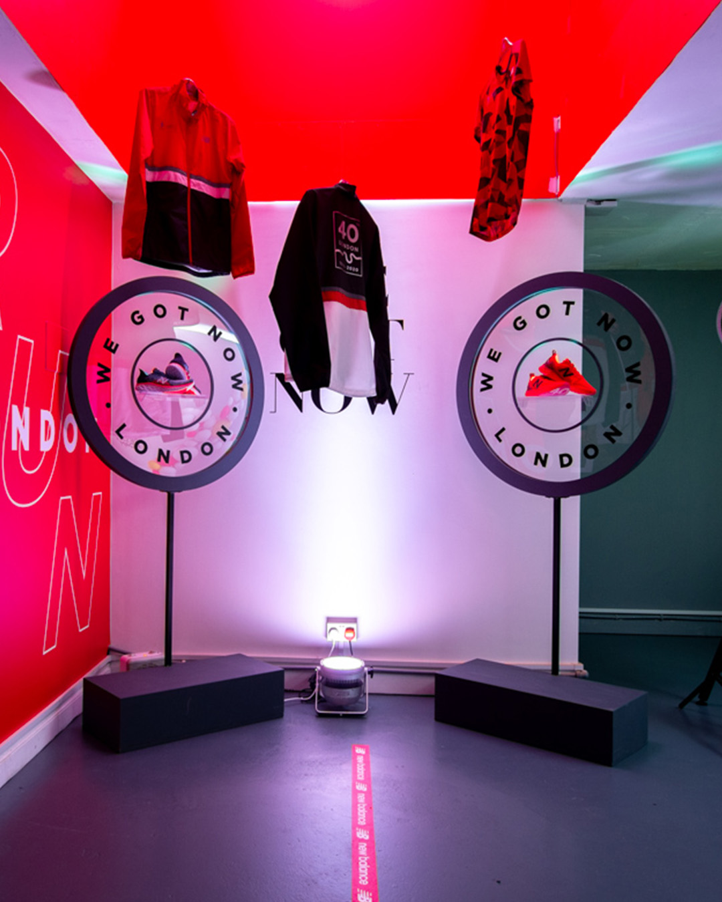

案例发生了什么
作为伦敦马拉松合作激活，New Balance 将当地酒吧改造成 The Runaway Pub。跑者通过 Strava 完成指定挑战并累积训练里程，再把里程兑换为可在酒吧使用的数字钱包额度与饮品。酒吧不只是发奖地点，也承担跑团集合、课程、恢复和社交功能。Communication Arts 与 Mongoose 的案例资料显示，项目把赛前几周原本分散在个人手表里的训练数据，转译成持续回到同一空间的理由。里程既证明了参与，也成为社区里的通用货币。
真实执行素材
以下图片来自权利方、球队、品牌、制作方或奖项原档；按执行链完整度灵活收录，不限制固定张数，逐图保留主源链接。


案例启示
案例启示
关键动作
- 以 Strava 训练里程作为资格和兑换依据，让奖励与真实运动行为绑定。
- 把一次领取扩展成可反复到访的实体酒吧，承接跑团、课程和赛前社交。
- 用数字钱包记录可用额度，让“跑了多少”直接对应“能换什么”。
传播与商业机制
运动数据货币化
里程不仅是成绩，也成为能在线下使用的价值凭证。
奖励社区化
兑现地点本身就是跑者聚会空间，奖励促进新的关系。
长周期回访
训练里程持续累积，品牌在整个备赛期都有新的互动理由。
可复用的方法把用户已经在做的长期行为转化成可累积、可兑换、可共同消费的品牌货币，再用实体空间承接社群。
适用条件与风险
- 酒精奖励必须设置年龄、饮用责任和非酒精替代选项，不能鼓励过量训练或饮酒。
- 公开的 53.2 万英里、约 6.3 万品脱等数字来自代理商 / 奖项案例自述，需按原口径理解。
资料与来源
官方资料与原始来源
Mongoose Agency2019 · New Balance Global Marathon Activation打开原始来源 ↗
Communication Arts2019 · The Runaway Pub打开原始来源 ↗
来源备注执行结构由两份项目档案交叉确认；参与与兑换数字均标注为品牌 / 代理商案例口径。